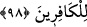
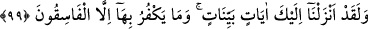

onu sevmek vâcibtir.” şeklinde olur.
Muhakkak ki Cebrâîl, Kur’ân’ı, tevhîd ve bir takım hükümlerle senden önceki
kitapları doğrulayıcı olarak, Allah’ın emir, izin ve kolaylaştırmasıyla Hak dine erdirici
ve cennetle müjdeleyici olarak senin kalbine indirmiştir. Kur’ân-ı Kerîm, şöhretinden
dolayı burada ismen zikredilmeyip sadece zamirle işâret edildi. Vahyin iniş yerini
belirtmek için “kalbine” denildi. Bu aynı zamanda “tenzîl” vâkıasının da kesinliğine
işâret eder. Çünkü kalb, vahyin alındığı ilk el olup “hıfz ve idrâk ettirdi.” demektir.
Âyeti okuyan Hz. Peygamber (s.a.) olduğu için “kalbine” değil, “kalbime” denilmeliydi.
Cenâb-ı Hakk’ın sözünü hikâye eden bu anlatım, ifâdeyi daha da güçlendirmek içindir.
Çünkü böyle denince verilmek istenen mesaj tam anlamıyla verilmiş olur. “Yâ
Muhammed! Ben sana söylediğim gibi sen de aynı şekilde insanlara de!” takdîrindedir.
Yahûdîlerin Cebrâîl’e düşmanlık etmeye hiç ama, hiç hakları yoktur. Eğer insaflı
davranmış olsalardı, onu sevecekler, kendilerine fayda verecek şeyleri ve onların
kitabını doğrulayıcı kitap olan Kur’ân’ı getirdiği için ona teşekkür edeceklerdi.
98. Kim, Allah’a meleklerine, peygamberlerine, Cebrâîl’e ve Mîkâîl’e düşman
olursa bilsin ki Allah da inkârcı kâfirlerin düşmanıdır.
Melekler içerisinde sâdece Cebrâîl ve Mîkâîl’in zikredilmesi, üstünlüklerini
göstermek içindir. Vasıfları farklı olduğundan dolayı cinsleri de sanki farklıymış gibi
addedildiler. Zikredilen melekler sanki ayrı bir tür melek olarak sayıldılar. İkrime
buyurmuştur ki: “Cibr”, “Mik” ve “İsrâf”, Süryânîce’de “kul” demektir. “îl” ve “âîl”
de Allah mânâsına gelir. Böylece Cebrâîl ve Mîkâîl “Allah’ın kulu” demektir.
“(Bilsin) ki Allah” bölümü şartın cevâbıdır. Burada zamirle işâret edilmeyip lâfzan
“Allah” kelimesinin getirilmesi, zamîrin Cebrâîl ve Mîkâîl’e nisbet edilme ihtimâlini
ortadan kaldırmak içindir. Kâfirler için de aynı şekilde “onlar” demeyip, ismen
zikredilmesi, onların bu düşmanlığı hak etmelerinin sebebinin küfürleri olduğunu
göstermek içindir. Mânâ özetle: “Kim onlara düşmanlık ederse, Allah da onlara düşman
olur ve düşmanlık yapanı acı bir azâbla cezâlandırır.” şeklindedir.
İbn Sûriyâ, Peygamberimiz’e: “Sana indirilenden bizim de bildiğimiz ve tâbi’
olabileceğimiz ne getirdin ki ona uyalım?” diye sorunca şu âyet indi: